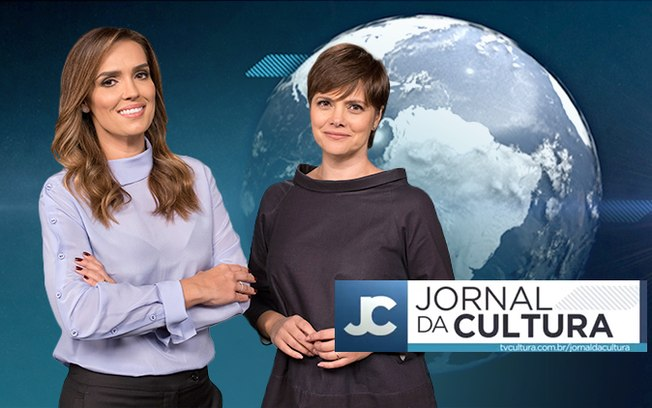

Jornal já bastante conhecido entre os brasileiros (está no ar desde 1986), vai ao ar de segunda à
sábado, sempre trazendo informações cotidianas como atualizações do COVID-19, vacinação pelo
mundo, pesquisas relacionadas à sociedade etc. Porém, atualmente, procura dar um enfoque maior
nas decisões e ações do Governo, com um foco em criticar, cobrar e questionar o Governo.
